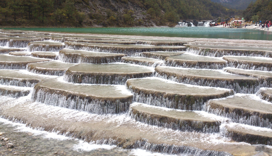

-

冬天的记忆
记忆里的冬天，最美好的时候是在小时候。有个印象很深刻的场景总是浮现在我脑海里，大概五六岁的样子，我坐在父亲的自行车后面，手上戴着一双红色的手套，伸手抓雪花的场景。红色的毛线帽，红色的围巾，红色的手套，俨然就是童话里面的“小红帽”。
-

梦里那个优秀的你
醒来后，仿佛自己是穿越了，也仿佛是看见了不一样的自己。没想到自己能有这么优秀的一面。我把它当成一个奇怪的梦，一个让我很诧异的梦，我认为这可能是仅少有的情况。
- 
云南之行——丽江古镇玉龙雪山
坐了四个小时的大巴，到达丽江，在酒店放好行李，然后带我们到了古镇品茶、买茶，最后交代一下，就自由活动了，我们四个人由于第二天是最后一天的行程，又是途经玉龙雪山然后拍照。两个从福建来的朋友从来也没有见过雪
-
云南之行——大理洱海一日游
第二天早上6点钟左右，到了大理火车站。一晚上都没休息好，急急忙忙的出站，找到导游，然后跟着他到了附近的餐馆，吃了早餐，话说这顿早餐是有史以来最差的一次，难免有些失望、鸡蛋每人只能一个、蛋糕每人一小片、稀饭一大碗、米线一大碗，要吃的自己盛。
-

云南之行——初到昆明滇池半日游
云南一直以来是我最想去的理想地，十月份刚好空出时间，于是计划去云南。网上搜了一下旅行社的信息，从成都报名参加6日单飞全程在5000块钱左右，十月份是旅游黄金季，客服一定要我当天就定下来，要不然就没有位置，所以，只能放弃，干脆自助穷游一次...
孙琦
邮箱：123456@qq.com
电话：123456
微信：123456
人气点击
-
梦里那个优秀的你
1963 -
我也是一个爱八卦的女程序员，这次我要八卦我自己！
1442 -
冬天的记忆
770 -
个人博客建站初衷
757 -
我仅仅是一个“草根站长”
757 -
经历了错误的一键替换，然后重来，再重来，总算成就了这么一个网站
599 -
世界上根本没有感同身受这回事
547 -
忙碌是自由活着的一种底气
464 -
兴趣支撑梦想，兴趣是支撑我自己前行的动力
375 -
7年，一个80后女站长与阿里云携手创业的真实故事
371